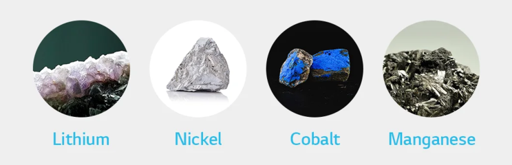
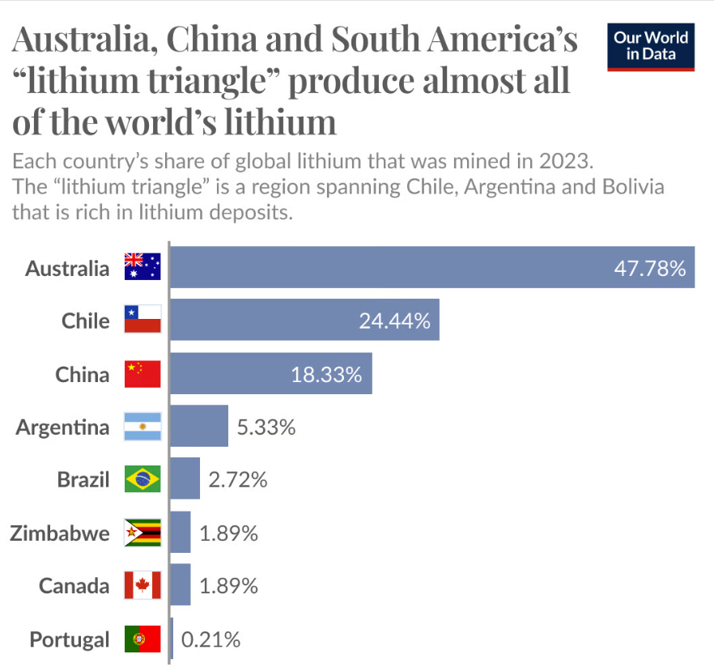
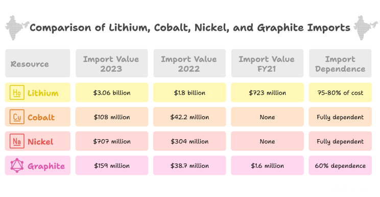
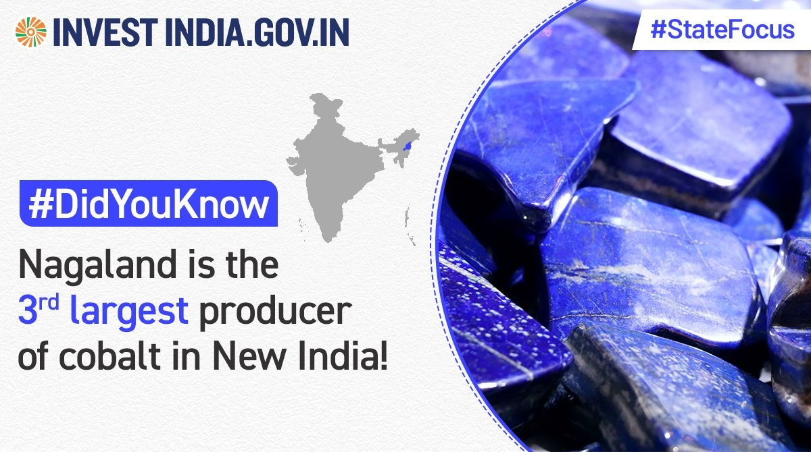
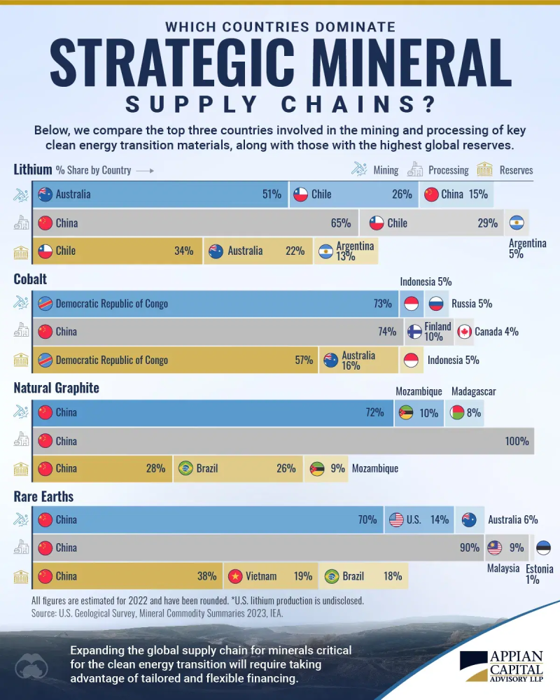
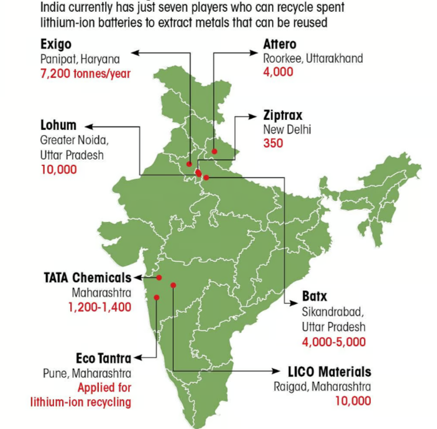
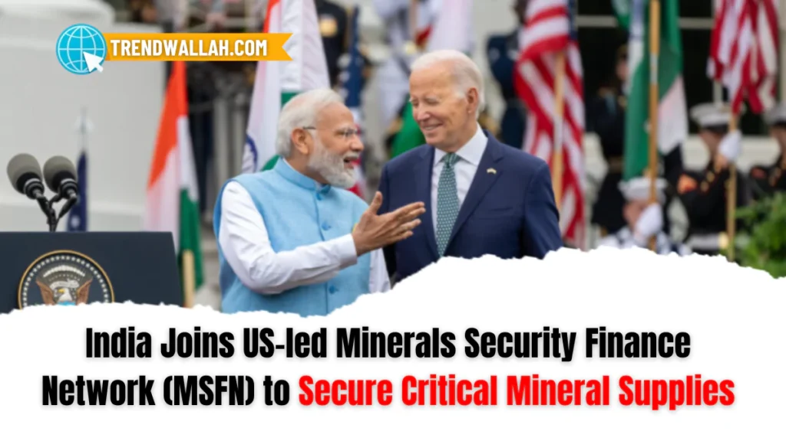
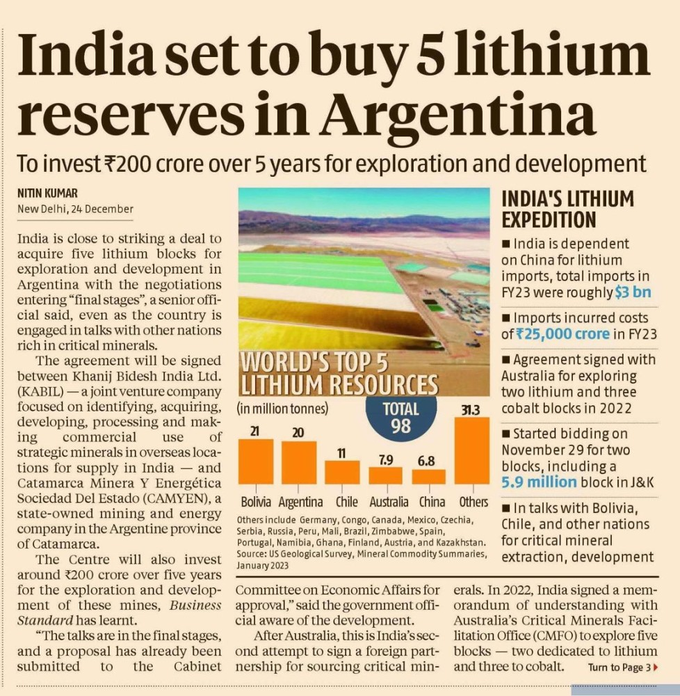

Introduction
India is gearing up for an electrifying revolution—literally. With a strong push toward electric vehicles (EVs), renewable energy, and energy storage, the demand for batteries is exploding. But here’s the catch: most of the critical raw materials needed to make these batteries are imported. So the big question is—can India become self-sufficient in battery raw materials?
Let’s dive into this pressing topic and see where India stands, what challenges it faces, and what steps it's taking to get there.
Understanding the Battery Raw Material Landscape
What are the key battery raw materials?
Batteries, especially lithium-ion ones, rely heavily on a few critical minerals:
- Lithium: The heart of the lithium-ion battery.
- Cobalt: Stabilizes the battery and extends its life.
- Nickel: Boosts energy density.
- Graphite: Used in the anode.
- Manganese and Aluminum: Other vital components.

Global supply and control of battery materials
Right now, a few countries dominate the global supply:
- Lithium: Australia, Chile, China
- Cobalt: Congo (70% of global production)
- Nickel: Indonesia, Philippines, Russia
- Graphite: China (almost 80%)

India's Current Dependency on Imports
- Lithium: India imports nearly all its lithium requirements, primarily in processed forms or as finished Li-ion cells and batteries. In FY 2020-21, India imported 71,392 tons of lithium commodities. The import value for lithium oxide and hydroxide reached $44.3 million in 2022, while overall lithium imports were valued at $723 million in FY21. Critically, imports of Li-ion batteries and cells themselves are substantial, hitting $1.8 billion in 2022 and surging to $3.06 billion in 2023. These imported cells account for a staggering 75-80% of the total cost of Li-ion battery packs assembled in India.
- Cobalt: The nation is fully dependent on imports for cobalt, lacking domestic primary production. Imports of cobalt (metal and articles) amounted to $108 million in 2023, with related articles adding another $42.2 million in 2022. Imports of cobalt ore remain minimal.
- Nickel: Similar to cobalt, India meets its nickel demand largely through imports due to the absence of primary production. Imports of raw nickel were valued at $707 million in 2023, supplemented by $304 million worth of ferro-nickel imports in the same year. Nickel ore imports are negligible.
- Graphite: While India produces natural graphite, it relies significantly on imports, particularly for the high-purity spherical graphite required for battery anodes, a technology still nascent domestically. Imports of natural graphite (non-powder/flake) were $1.6 million in 2023, while powder/flake imports reached $38.7 million in 2022. Artificial graphite imports were even higher at $159 million in 2023. An estimated 60% overall graphite import dependence has been reported.

India's Natural Resources Potential
- Lithium: The most significant development has been the discovery of lithium reserves.
Jammu & Kashmir (J&K): In February 2023, the Geological Survey of India (GSI) announced the discovery of 5.9 million tonnes of inferred lithium resources (G3 stage) in the Salal-Haimana area of Reasi district. This was a landmark finding, placing India potentially among countries with significant lithium endowments. However, "inferred resources" represent an early stage of assessment with lower geological confidence compared to "indicated" or "measured" resources, requiring further detailed exploration to confirm quantity and economic viability.
Chhattisgarh: Subsequently, lithium deposits were identified in the Katghora tehsil of Korba district. While initial reports suggested substantial quantities, official confirmation and resource estimation are pending further GSI investigation.
Rajasthan: GSI is actively exploring potential lithium and associated rare earth element (REE) deposits in Nagaur district, following preliminary surveys.
Other Potential Areas: Exploration is also underway in states like Arunachal Pradesh, Andhra Pradesh, Jharkhand, and Meghalaya, focusing on mica belts and brine pools (e.g., Sambhar and Pachpadra in Rajasthan, Rann of Kutch in Gujarat) which can host lithium. The Atomic Minerals Directorate for Exploration and Research (AMD) has also identified lithium resources of 1,600 tonnes (inferred category) in the Marlagalla area of Mandya district, Karnataka.

- Cobalt: Domestic cobalt resources are primarily associated with nickel laterite deposits and polymetallic nodules.
Odisha: The Sukinda valley in Jajpur district holds potential cobalt resources associated with nickeliferous limonite ores. GSI has estimated about 19 million tonnes of potential cobalt resources here. Hindustan Copper Limited (HCL) is also exploring methods to recover cobalt as a byproduct from its copper operations.
Jharkhand & Nagaland: Cobalt occurrences are also reported in Singhbhum district (Jharkhand) and Tuensang district (Nagaland), often associated with copper, lead-zinc, and nickel deposits.
Deep Sea Mining: India holds exploration rights for polymetallic nodules in the Central Indian Ocean Basin, which contain significant quantities of nickel, copper, cobalt, and manganese. The government's Deep Ocean Mission aims to develop technologies for extracting these resources, although commercial viability and environmental concerns remain significant hurdles.

- Nickel: Similar to cobalt, India's primary nickel potential lies in the lateritic deposits of Odisha.
Odisha: The Sukinda valley is the main area, with GSI estimating around 189 million tonnes of nickel ore resources. HCL has signed an MoU with Mishra Dhatu Nigam Limited (MIDHANI) and Mineral Exploration Corporation Limited (MECL) to explore, extract, and process nickel, particularly focusing on the Singhbhum Copper Belt in Jharkhand, which also has nickel potential alongside copper and cobalt.
- Graphite: India possesses considerable graphite resources, ranking among the top global reserve holders, though production levels are comparatively lower.
Resource Distribution: Significant resources are found in Arunachal Pradesh (estimated 35% of total graphite resources), Jammu & Kashmir (29%), Odisha (10%), Jharkhand (9%), and Tamil Nadu (5%). Other states with resources include Karnataka, Kerala, Maharashtra, Rajasthan, Chhattisgarh, and Gujarat. India's total recoverable reserves are estimated at around 11 million tonnes, with total resources pegged much higher at about 199 million tonnes.
Production & Quality: Current production is primarily concentrated in Odisha, Tamil Nadu, and Jharkhand. However, a major challenge is the need for advanced processing technology to upgrade domestic natural graphite to the high-purity (>99.95%) spherical graphite required for Li-ion battery anodes. Most current production serves traditional industries like refractories and crucibles.

Key Challenges
- Critical Mineral Deficits: India lacks domestic reserves of lithium, nickel, and cobalt — essential for lithium-ion (Li-ion) batteries. These materials are concentrated in geopolitically sensitive regions, raising supply chain risks. For instance, China dominates 70% of global lithium refining and 80% of cobalt processing.
- Dependency on Imports: Over 90% of India’s lithium and cobalt are imported, primarily from Australia, Chile, and the Democratic Republic of Congo. Volatile prices and export restrictions (e.g., Indonesia’s nickel export ban) exacerbate vulnerabilities.
Domestic Strengths and Opportunities
- Existing Raw Material Production: India produces bauxite, copper, graphite, and manganese ore, which are used in ancillary battery components. The country is also a major global supplier of aluminum and refined copper — key precursor materials for battery cells.
- Recycling as a Strategic Lever: With Li-ion battery demand projected to reach 235 GWh by 2030, recycling could recover up to 95% of lithium from spent batteries. Companies like Tata Chemicals and Attero Recycling are scaling recycling facilities, aiming to reduce import reliance. The government estimates that recycling could meet 30–40% of domestic lithium demand by 2030.
- Focus on LFP Batteries: Indian firms like Log9 Materials and Exide Industries Limited are prioritizing lithium iron phosphate (LFP) cells, which avoid nickel and cobalt. LFP batteries now represent 70% of India’s planned production, leveraging lower costs and abundant iron-phosphate resources.

Strategic Initiatives
Global Partnerships:
- Khanij Bidesh India Ltd (KABIL), a joint venture, secured lithium mining rights in Argentina and Australia to secure 500,000 tonnes of lithium carbonate by 2030.
- Free-trade agreements with mineral-rich nations (e.g., Chile, Bolivia) aim to diversify sourcing.
Bilateral Agreements and MoUs: India is pursuing government-to-government (G2G) agreements and Memoranda of Understanding (MoUs) with key resource-rich countries to facilitate trade, investment, and joint exploration in the critical minerals sector.
- Australia: India and Australia have elevated their relationship to a Comprehensive Strategic Partnership. A significant focus is on critical minerals collaboration. Australia is a major producer of lithium, cobalt (as a byproduct), and rare earth. The agreements aim to secure reliable supplies for India and encourage Australian investment in India's processing and manufacturing sectors.
- Argentina: Besides KABIL's direct pursuits, India and Argentina have signed MoUs covering mineral exploration and development, specifically targeting lithium.

- United States: India is a partner in the US-led Minerals Security Partnership (MSP), a multinational collaboration aimed at securing critical mineral supply chains and promoting investment in sustainable mining and processing globally. This provides a platform for cooperation with other major consuming nations and resource holders.
- Other Engagements: India is also engaging with countries like Chile, Bolivia, Canada, and African nations (e.g., Zambia, DRC for cobalt) to diversify sourcing options.

Policy Support:
- The Production-Linked Incentive (PLI) Scheme for Advanced Chemistry Cells allocates ₹18,100 crores to boost domestic battery manufacturing.
- The National Mission on Transformative Mobility targets 50 GWh of battery capacity by 2030
R&D and Innovation:
Indian R&D institutions like the Council of Scientific and Industrial Research (CSIR) labs (CECRI, NML, IICT), Indian Institutes of Technology (IITs), International Advanced Research Centre for Powder Metallurgy and New Materials (ARCI), and the Centre for Materials for Electronics Technology (C-MET) (C-MET) are actively involved in battery material research, alternative chemistries, and process development.
Institutions like the CSIR-INDIAN INSTITUTE OF CHEMICAL TECHNOLOGY are developing sodium-ion and zinc-air batteries to reduce lithium dependency.
Path to Self-Sufficiency
- Short-Term (2025–2027): Dependence on imports will persist, but recycling and LFP adoption will mitigate risks.
- Medium-Term (2028–2030): Domestic lithium mining in Jammu & Kashmir and Rajasthan (estimated reserves: 5.9 million tonnes) could begin production.
- Long-Term (Post-2030): A circular economy for batteries, combined with alternative chemistries, could achieve 60–70% self-reliance in critical materials.
Conclusion: A Strategic Imperative Requiring Sustained Commitment
India's quest for greater self-sufficiency in battery raw materials is not just an economic aspiration but a strategic imperative for achieving its ambitious energy transition goals, bolstering national security, and capturing value in a rapidly growing global market. While full self-sufficiency remains unlikely due to mineral deficits, India can significantly reduce import dependence through recycling, diversified sourcing, and innovation in battery technologies. Success hinges on sustained policy support, global collaborations, and scaling domestic mining and recycling infrastructure.